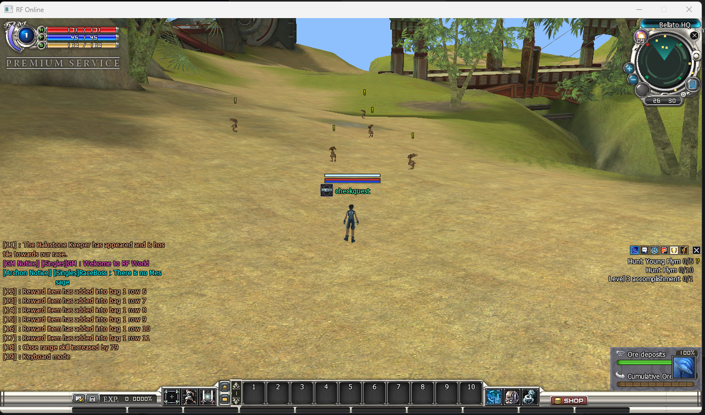

Quest Monster Marks
Quest Monster Marks
Client-visible
Ships off
Hot-reload

! above it — here the two Flym hunts listed on the right of the screen.What it does — and why you would use it
Quest Monster Marks float a bright yellow exclamation mark (!) above every live monster that a player still needs to kill for one of the quests they have accepted. It turns “hunt ten of something across a big field” from a search into a straight walk.
Use it to:
- Help new players find quest targets without re-reading quest text.
- Speed up grind quests on crowded or large maps.
- Make it obvious at a glance which monsters are worth fighting right now.
| Half | Where it lives | Its job |
|---|---|---|
| Server switch | .Server\Zoneserver\RF_Bin\Modules\QuestMonster.ini | Decides whether clients draw the marks. One Enable key. |
| Client half | Built into the game client — there is no client file to edit. The client works out which monsters to mark from the player's own quest journal. | |
No client content neededUnlike the Welcome Window, this module has no text file on the client. The server only sends the on/off switch; which monsters get marked, and the mark itself, are decided by the client from the player's accepted quests.
How to activate it
-
Turn the feature on (server). Open .Server\Zoneserver\RF_Bin\Modules\QuestMonster.ini in Notepad and change the
Enableline under[General]:
Save the file. A running Zone server reloads it immediately and pushes the new state to clients; if the server is not running yet it simply starts with the feature on.[General] Enable = 1 - Nothing to do on the client. There is no client setting for this module — the mark is built into the game client and appears as soon as the server switch is on.
-
Test it. Start the servers, log in, accept any “kill X monsters” quest and look at those monsters — each live one carries a yellow
!. Players already in the world pick the change up on their next entry or when the server pushes the reload.
Do not delete the fileLike every module file,
QuestMonster.ini is required when the Zone server starts — deleting it stops the server from booting. To disable the feature, set Enable = 0 instead.What gets marked
- Monsters only. Players, NPCs and other character types are never marked.
- Only unfinished kill objectives. A monster is marked while it is the target of a “kill this monster” objective the player has not finished. The moment the required count is reached the mark disappears — including when the last needed monster dies.
- It always agrees with the quest text. The client marks exactly the monster the quest description names, so a mark never points at the wrong creature.
- Live and on screen only. Dead monsters, and monsters not currently drawn, get no mark.
- Updates by itself. The target list is refreshed about twice a second, so accepting, finishing or abandoning a quest changes the marks within half a second — no relog needed.
The mark is a plain yellow ! drawn one text line above where the monster's nameplate would sit, so it stays readable without covering the monster.